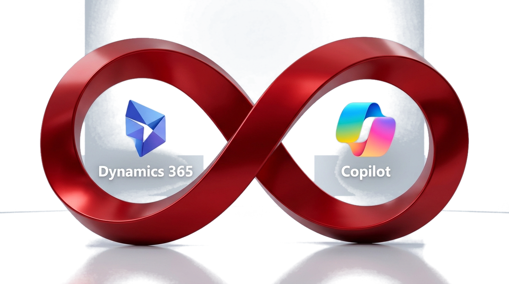

TRANSPARENT PNG CONVERSION COMPLETE
ไฟล์ภาพ PNG ตัดพื้นหลังโปร่งใส สำหรับแทรกใน PowerPoint
แปลงเป็นไฟล์ PNG คุณภาพสูง (1376×768) แบบพื้นหลังโปร่งใส (Alpha Cutout) ไร้ขอบสี่เหลี่ยมสีเทาบดบัง สามารถนำไปวางลงบนสไลด์ PowerPoint พื้นขาว พื้นดำ หรือพื้นสีขององค์กรได้แนบเนียน 100%
🖥️ ทดสอบการวางรูปบนพื้นหลังสไลด์ PowerPoint สีต่าง ๆ (Interactive Slide Preview)
คลิกเลือกสีพื้นหลังเพื่อทดสอบความเนียนตาของไฟล์ PNG โปร่งใส
สีสไลด์:

PowerPoint Slide 16:9 • Transparent PNG Render
📥 เลือกรุ่นไฟล์ PNG ที่เหมาะกับการใช้งานของคุณ:
⭐ แนะนำมากที่สุดสำหรับ PPT
Alpha Transparent
PNG พื้นหลังโปร่งใส (Transparent)
ตัดพื้นหลังสตูดิโอออก 100% เหลือเฉพาะโบว์แดง ไอคอน D365, Copilot และตัวหนังสือสีขาว นำไปวางบนสไลด์สีใดก็ได้

Clean White 16:9
PNG พื้นขาวสนิท (Clean White)
พื้นหลังสีขาวบริสุทธิ์ สำหรับท่านที่ใช้เทมเพลตสไลด์ PowerPoint สีขาวมาตรฐาน วางแล้วกลมกลืนคมชัดระดับสูง

Dark Keynote 16:9
PNG พื้นหลังเข้ม (Dark Keynote)
พื้นหลังโทน Dark Navy สำหรับสไลด์สไตล์ดาร์กโหมดหรือการประชุมผู้บริหารที่เน้นความขรึมและสง่างาม

💡 วิธีการนำไฟล์ PNG โปร่งใสไปใส่ใน PowerPoint (.pptx):
- คลิกปุ่ม "ดาวน์โหลด PNG โปร่งใส" ด้านบน เพื่อบันทึกไฟล์ลงในเครื่องคอมพิวเตอร์
- เปิดไฟล์งาน PowerPoint (.pptx) ของท่าน แล้วเลือกสไลด์หน้าที่ต้องการวางรูป
- ไปที่เมนูด้านบน เลือก Insert (แทรก) ➔ Pictures (รูปภาพ) ➔ This Device (อุปกรณ์นี้)
- เลือกไฟล์
Fujitsu_Red_Ribbon_D365_Copilot_Transparent.pngที่เพิ่งดาวน์โหลด - ปรับขนาด ย่อ-ขยาย หรือจัดกึ่งกลางสไลด์ได้ทันที โดยไม่มีพื้นหลังสีเทาบดบังเนื้อหาอื่น ๆ